Four lanes · independent trigger clocks · clip composition
Sequence
Four independent sample sequences, each with one sample lane, one of the fifteen playback engines and two voices. Length, rate and rotation belong to each trigger sequence. Pitch and position belong to its trigs. Each lane stays on its assigned sample without stack scanning. The shared Mixer provides a four-output view here with level, stereo balance, EQ and priority ducking.
Start a sequence
- Open Capture + Menu → Mode and choose Sequence.
- Track 1–4 selects a lane. Shift + Track opens its sample browser. Choose its engine on the normal engine pages.
- Tap pads to enable trigs. Step 1 is at the top left; numbering moves right, then down, to step 32 at the bottom right.
- Press Play. Authored trigs play immediately, without recorded launch notes.
The pads show the selected lane while other sequences continue. Enabled trigs are cyan, inactive steps dim red, and the playhead green. Pads beyond the active length are dark. A held editing step is white. The OLED shows all four lane positions against their current playback lengths, including recorded LEN gestures. On the waveform, short ticks show enabled trig starts. The small pointer above the waveform shows the currently playing step's POS; while stopped, it shows the selected step's POS. An underline below the waveform stays at the newest sounding voice's start. A solid vertical line shows that voice's moving sample reader; a dashed line shows a second reader. A short sample may loop from 75% back to the beginning between screen refreshes, so its moving line can appear near the left while the fixed start marks remain at 75%. The footer’s TIME readout shows the newest voice’s actual duration in milliseconds or seconds; at rest, it shows the lane default converted to time. The editable DUR control shows a step count in STEP mode, or milliseconds/seconds in TIME mode.
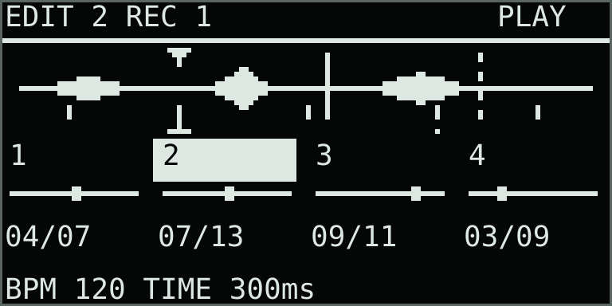
Page order
Capture + Track 1 opens PLAY at SEQ LANE. Repeat the chord, or use Up/Down within PLAY, to move to SEQ SETUP. The hub’s SEQ SETUP shortcut opens this same second page. Track buttons without Capture still select the lane and its sequence.
| Order | Page | What it controls |
|---|---|---|
| 1 | SEQ LANE | Length, rate, rotation and default trig values. |
| 2 | SEQ SETUP | Sequencer type, DIR, PATH, duration unit, root and scale. |
| 3 | Euclidean / Onset pages | The selected type’s three pages. Omitted for Normal. |
| 4 | TRIG → BURST | Individual step and retrigger edits, kept adjacent. Holding a step opens TRIG directly. |
| 5 | ENGINE → engine-specific pages | The selected lane’s playback engine and its sound controls. |
| 6 | SEQ AMP → PLAY GAIN | The fitted note envelope and polyphony gain compensation. |
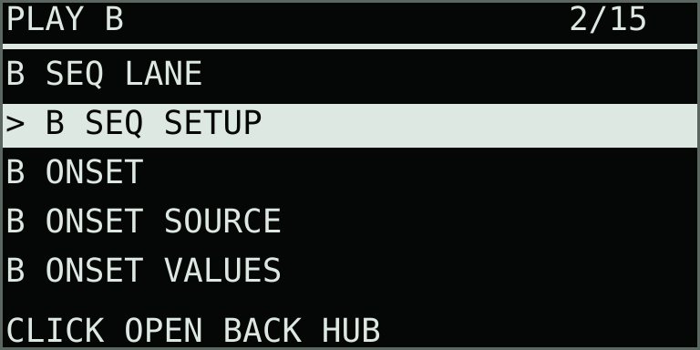
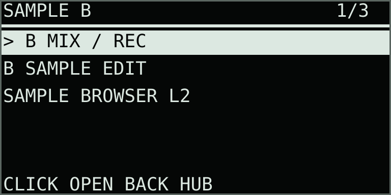
SAMPLE is the separate group for source loading, recording and editing: MIX / REC, SAMPLE EDIT and the sample browser. Opening a page group does not select a different lane. MIX / FX contains the output mixer and effects; PERFORMANCE contains clips, recorded gestures, fades and chains.
SEQ LANE
Menu opens parameter pages. Click the main encoder from the overview to open SEQ LANE. The overview encoders use these same assignments. Capture + Menu and Capture + Track retain their normal navigation groups.
| Knob | Display | Range | What it controls |
|---|---|---|---|
| 1 | LEN | 1–32 | Active length. Trigs outside it remain stored. |
| 2 | RATE | 1/1–1/64, with triplets | Step duration at Thru’s BPM, independent for each lane. |
| 3 | ROT | 0–31 | Starting offset along the selected PATH within LEN. Pad contents stay in place. |
| 4 | ON | OFF / ON | Lane activation. OFF skips its new sequence triggers. |
| 5 | VEL | 1–127 | Default trig velocity. |
| 6 | DUR | 0.01–32 steps or 10 ms–30 s | Default note duration. SEQ SETUP UNIT chooses STEP or TIME. |
| 7 | BPM | 1–999 | Shared transport tempo. Very fast BPM combined with 1/64 RATE, Burst and clip speed can exceed Move’s audio headroom. |
| 8 | CLIP | 1–64 beats | Clip repetition span for composition; lane phases continue across its repetitions. |
Changing RATE during playback keeps that lane on its current step and preserves its progress through the step. The next hit follows the new division, so a slower RATE can leave a longer interval before it sounds. Other lanes keep their own positions. In Capture + Menu, SEQ SETUP opens ROOT, SCALE, ENTRY, duration UNIT, TYPE, DIR and PATH; SEQ LANE is available under PLAY.
Sequencer types
Each lane can use Normal, Euclidean or Onset. Select the lane with Track 1–4, then open Capture + Menu → SEQ SETUP and turn knob 5, TYPE. Normal is the default: tap and hold steps to author the sequence manually. Euclidean distributes a chosen number of hits across LEN. Onset fits the sample’s source-map timing across LEN, grouping nearby starts as Burst events. The four lanes can use different types.
Tap steps to turn them on or off in Euclidean or Onset without printing to Normal. Manual on/off overrides remain in place when HITS or other recipe controls change, during recorded recipe playback, and after reopening the project. REGEN clears those manual overrides; PRINT freezes the current result to Normal.
SEQ SETUP provides TYPE, DIR and PATH for every type. Its last slot is reserved. Euclidean and Onset provide PRINT and REGEN on their Source pages; Normal has no generation actions.
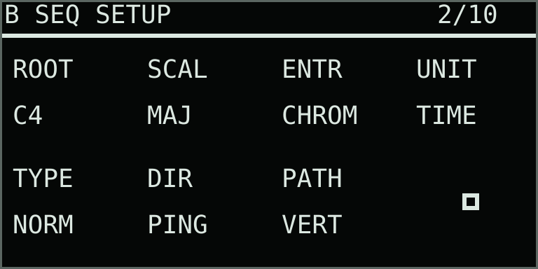
During an overdub, existing sequence motion continues until you move its control. A moved control responds immediately; controls you leave alone retain their recording. UNIT and duration readouts follow the unit currently playing.
All types share LEN, RATE, ROT, DIR, PATH, note defaults, duration UNIT and the lane’s playback engine. Fresh sequences use TIME, so DUR is independent of RATE and BPM. Existing clips keep their saved STEP or TIME choice. Changing TYPE does not change UNIT.
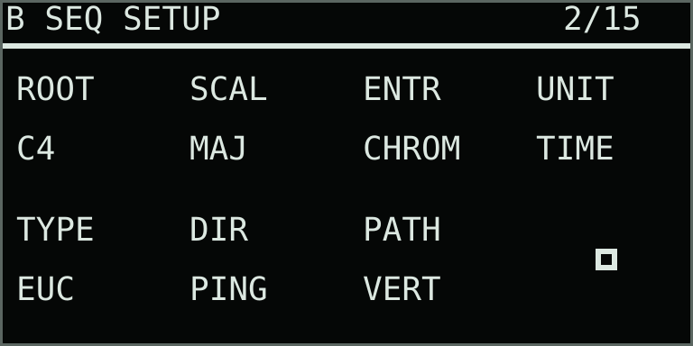
| Knob | Display | Range | What it controls |
|---|---|---|---|
| 1–4 | ROOT / SCAL / ENTR / UNIT | See descriptions | Pitch root, scale, chromatic or scale entry, and duration unit. |
| 5 | TYPE | NORM / EUC / ONSET | NORM, EUC or ONSET for this lane. |
| 6 | DIR | FWD / REV / PING / F+B / RAND | Order in which this lane visits its steps. Applies to every sequencer type. |
| 7 | PATH | HORIZ / VERT / DIAG | Pad route: across rows, down columns or through diagonal bands. DIR chooses how to travel along that route. |
| 8 | □ | Reserved | Reserved. |
Grid path and direction
SEQ SETUP knob 7 chooses PATH. HORIZ reads across each row; VERT reads down a column before moving right; DIAG sweeps successive diagonal bands. Each route covers every cell inside LEN. Cells outside LEN are skipped, including partial rows. A disabled trig remains a timed rest. The pads retain their contents and positions while the green cursor follows the chosen path. Lane-position readouts identify the current pad cell, so VERT and DIAG change cell numbers non-sequentially even when RATE is steady.
| Display | LEN 16, DIR FWD example | What it controls |
|---|---|---|
| HORIZ | 1 2 3 4 5 6 7 8 · 9 10 11 12 13 14 15 16 | Across rows, starting at the top left. |
| VERT | 1 9 · 2 10 · 3 11 · 4 12 · 5 13 · 6 14 · 7 15 · 8 16 | Down each active column. |
| DIAG | 1 · 2 9 · 3 10 · 4 11 · 5 12 · 6 13 · 7 14 · 8 15 · 16 | Through diagonal bands, visiting each active cell once. |
DIR works along any PATH: VERT + REV retraces the column route backward; DIAG + PING travels out and back through diagonal bands. PATH changes playback order; Euclidean SHIFT moves generated hits on the grid. Switching PATH does not regenerate the rhythm, so the same pad pattern can sound different through a new route.
SEQ SETUP knob 6 changes the selected lane’s DIR. LEN, RATE and the other lanes keep their own clocks. Each visited pad keeps its POS, NOTE, VEL, DUR, cycle condition and Burst settings. A live DIR or PATH change takes effect at the next step that has not already triggered, continuing from the current pad without restarting sounding notes. ROT and LEN edits also preserve events already committed: an already-started Burst finishes even if LEN removes its pad. Removed pads stay dark; the cursor returns when the new route reaches an active cell.
| Display | Four-step example | What it controls |
|---|---|---|
| FWD | 1 2 3 4 · 1 2 3 4 | Forward through LEN. |
| REV | 4 3 2 1 · 4 3 2 1 | Backward through LEN. |
| PING | 1 2 3 4 3 2 · 1 2 | Forward and back; each endpoint plays once per turn. |
| F+B | 1 2 3 4 4 3 2 1 · 1 2 | Forward and back; each endpoint repeats at a turn. |
| RAND | A chosen step each tick; repeats are possible. | Choose from every step inside LEN, including rests. The saved seed makes a fresh Play repeat the same choices. |
ROT offsets the starting point along the chosen path within LEN. A cycle for HIT/EVERY is one complete route: LEN ticks for FWD, REV and RAND; 2 × (LEN − 1) for PING; 2 × LEN for F+B. A one-step sequence always has a one-tick cycle. Clip repeats preserve the route; a fresh Play or a different clip starts it again. DIR and PATH change the sequence’s step order; the generator’s ORDER control arranges sample source positions inside its trigs. Sample playback direction remains an engine setting.
Euclidean and Onset each add three pages in PLAY immediately after SEQ SETUP. Only the chosen type’s pages appear. Edits are audible on upcoming trigs while Play runs. Back and page changes keep the type and its settings active. Clips, clip copies and projects store the type, recipe and resulting trigs; an Onset source change rebuilds from the new sample when its map becomes available. An unavailable source shows a status message and retains the last playable result.
Euclidean
Euclidean and Onset pages use the standard two-row parameter layout. The main Sequence view provides the sample waveform, trig start markers and playheads. HITS sets the Euclidean rhythm. SHIFT moves its generated hits along the pad grid, wrapping within LEN. Positive values move hits to later pad cells. SEQ LANE ROT offsets playback through the existing cells and leaves their pad positions unchanged. Manual on/off overrides retain their cells until REGEN. MAP set to KEEP retains POS settings; a selected source map assigns starts across enabled trigs.
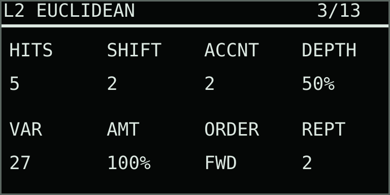
| Knob | Display | Range | What it controls |
|---|---|---|---|
| 1 | HITS | 0–LEN | 0–LEN evenly distributed hits. |
| 2 | SHIFT | 0–LEN−1 | Move the generated hit pattern across pad cells without changing playback ROT, RATE or lane phase. |
| 3 | ACCNT | OFF / 1–32 | Number of accented hits; OFF keeps existing velocities. |
| 4 | DEPTH | 0–100% | Velocity reduction for unaccented hits. |
| 5 | VAR | 0–65535 | Deterministic variation seed. The same settings reproduce the same result. |
| 6 | AMT | 0–100% | Proportion of candidate changes applied, 0–100%. |
| 7 | ORDER | FWD / REV / PAL / RAND / WALK / CYCLE / SPRD | Order of source positions across generated hits. Available when MAP assigns source starts. |
| 8 | REPT | 1–16 | Repeat each selected source position before advancing. |
Onset
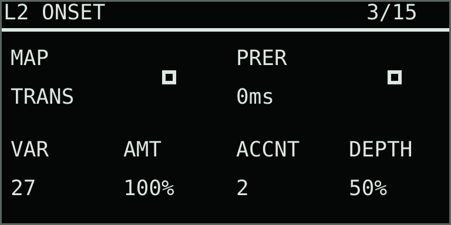
| Knob | Display | Range | What it controls |
|---|---|---|---|
| 1 | MAP | AUTO / TRANS / FILE / EDIT / EQUAL | AUTO, TRANS, FILE, EDIT or EQUAL source starts. AUTO uses available edited/file/transient markers, with equal regions as fallback. |
| 2 | COUNT | 1–64 | Region count for AUTO fallback or EQUAL. |
| 3 | PRER | AUTO / 0–30 ms | AUTO or 0–30 ms before each source start. This changes POS without moving its rhythmic event. |
| 5–6 | VAR / AMT | As on Euclidean | Variation seed and change amount. Knob 4 is reserved. |
| 7 | ACCNT | OFF / 1–32 | Number of accented hits; OFF keeps existing velocities. |
| 8 | DEPTH | 0–100% | Velocity reduction for unaccented hits. |
Source pages
EUC SOURCE and ONSET SOURCE share FROM / TO on knobs 3–4, LOCKS on knob 6, PRINT on knob 7 and REGEN on knob 8. Euclidean puts ORDER / REPT on its first page; Onset puts ACCNT / DEPTH on its first page. Each control has one place in the chosen type’s pages.
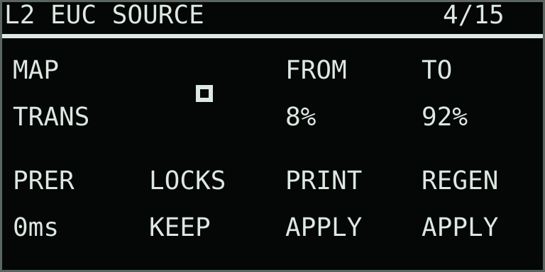
| Knob | Display | Range | What it controls |
|---|---|---|---|
| EUC 1 | MAP | KEEP / AUTO / TRANS / FILE / EDIT / EQUAL | Source start map. Onset puts MAP on its first page and omits KEEP. |
| EUC 2 | COUNT | 1–64 | Equal-region count when applicable. |
| ONSET 1 | ORDER | FWD / REV / PAL / RAND / WALK / CYCLE / SPRD | Source order. CYCLE shuffles without repeats within each pass; SPRD reaches across the available range. |
| ONSET 2 | REPT | 1–16 | Repeat each source choice before advancing. |
| 3–4 | FROM / TO | 0–100% | Restrict source starts to this sample range. |
| EUC 5 | PRER | AUTO / 0–30 ms | Pre-roll before a source start. Onset puts PRER on its first page and reserves Source knob 5. |
| 6 | LOCKS | KEEP / RPLC | KEEP protects manual POS, NOTE, VEL and DUR locks and Burst timing. RPLC permits enabled generation choices to overwrite those locks. Rhythm updates immediately in either setting. |
| 7 | Action | Freeze the current result as Normal. Turn clockwise to apply. | |
| 8 | REGEN | Action | Rebuild and clear manual hit/Burst overrides. Turn clockwise to apply. |
Source order and repeats
ORDER and REPT assign sample starts to enabled trigs in ascending pad order. They apply when MAP selects a source map. DIR and PATH then choose the order in which those pads play. Each pad retains its assigned POS when the playback route changes.
For example, six generated hits with three source starts A, B and C, ORDER FWD and REPT 2 receive A A B B C C. HORIZ + DIR REV plays those assignments as C C B B A A. VERT or DIAG follows the same pad assignments through a different route. REPT repeats the source assignment across generated hits; use BURST for extra triggers inside one step. Onset can assign a separate source start to each Burst event, so REPT counts those events too.
| Display | What it controls |
|---|---|
| FWD | Advance through source starts from first to last, then wrap. |
| REV | Advance from last to first, then wrap. |
| PAL | Travel forward and back through the source starts, without repeating the endpoints. |
| RAND | Choose a source start at random; immediate repeats are possible. |
| WALK | Move one source start forward or backward at each advance, wrapping at the ends. |
| CYCLE | Shuffle the source starts and use each once before the next shuffle. |
| SPRD | Spread source choices across the available range within the generated hits. |
REPT repeats each choice before ORDER advances. VAR determines the random choices. LOCKS KEEP protects existing manual POS locks, so some pads can retain their own starts instead of the generated assignment.
With MAP KEEP, ORDER, REPT, COUNT, PRER, FROM and TO show hollow squares and ignore encoder turns. Returning to a source map restores the applicable controls. COUNT divides EQUAL regions and the equal-region fallback in AUTO. AUTO also shows a square for COUNT while edited, file or transient markers supply the starts, or while no source is available. COUNT returns when equal-region subdivision applies. See Sequencer control availability for the other dependencies.
Values pages
The top row groups PITCH, SPAN, HUMAN and PROB. The bottom row groups DUR, MIN and MAX, followed by a reserved cell. Both bounds stay on the same row; unavailable bounds show a square.
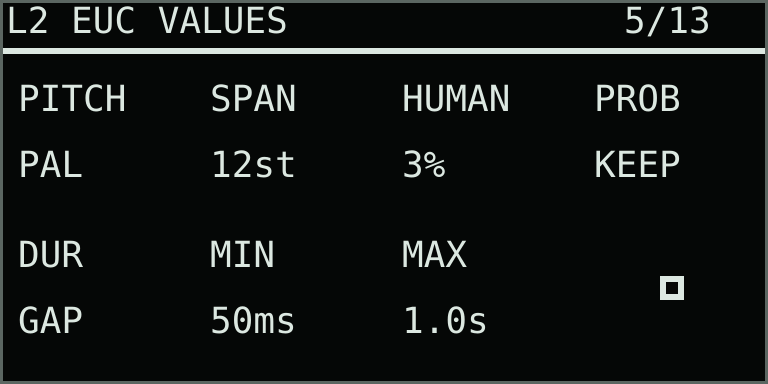
| Knob | Display | Range | What it controls |
|---|---|---|---|
| 1 | PITCH | KEEP / UP / DOWN / PAL / RAND / WALK | KEEP, Up, Down, Palindrome, Random or Walk pitch offsets; uses the lane root and ENTRY scale setting. |
| 2 | SPAN | 0–24 semitones | Pitch range, up to ±24 semitones. |
| 3 | HUMAN | 0–25% | Deterministic timing displacement up to ±25% of a step. |
| 4 | PROB | KEEP / 0–100% | KEEP preserves each trig’s existing probability. Turn clockwise from KEEP to reach 0%, then 1–100%; turn below 0% to return to KEEP. A numeric value sets the probability for generated hits. |
| 5 | DUR | KEEP / SHORT / GAP / RAND | KEEP preserves duration; SHORT uses MIN; GAP fits to the next enabled hit or Burst event along DIR and PATH, bounded by MIN and MAX; RAND chooses between MIN and MAX. |
| 6–7 | MIN / MAX | 10 ms–30 s / 0.01–32 steps | Bounds in the shared UNIT: 10 ms–30 s for TIME, 0.01–32 steps for STEP. SHORT uses MIN only. |
| 8 | □ | Reserved | Reserved. |
GAP follows the current DIR, PATH and ROT, including Burst timing and MICRO offsets. Each new note fits to the next nominal enabled hit; probability and cycle conditions do not lengthen that gap. MIN and MAX keep the result within the selected duration range. In RAND, the search covers the next 128 ticks and uses MAX if no hit is found. Manual DUR locks remain protected with LOCKS KEEP. Sounding notes retain the duration chosen when they started.
PRINT freezes the generated durations from the first visit to each trig as ordinary Normal locks. PING, F+B and RAND can otherwise give a trig different GAP durations on different visits.
Tap steps and edit locks normally in any type. Manual hit toggles stay in place through recipe changes until REGEN. SOURCE → LOCKS KEEP protects manual parameter locks and Burst timing; RPLC deliberately replaces values selected for generation. This choice concerns trig values, not whether a changed rhythm updates. PRINT leaves all current trigs in Normal and keeps the recipe choices for later reuse. A printed result no longer follows sample-map changes. Generation never restarts the other lanes’ clocks or already sounding notes. Recipe controls can be recorded as gestures; finish audio recording or clip transitions before editing them. TYPE, PRINT and REGEN require performance recording to be stopped.
Hold to edit
Hold a pad for about 300 ms to open TRIG without disabling it. Release to return to the sequence overview. A short tap toggles it. A star marks an explicit lock; unstarred values inherit their defaults. Hold Delete/X while turning POS, NOTE, VEL or DUR to remove that lock.
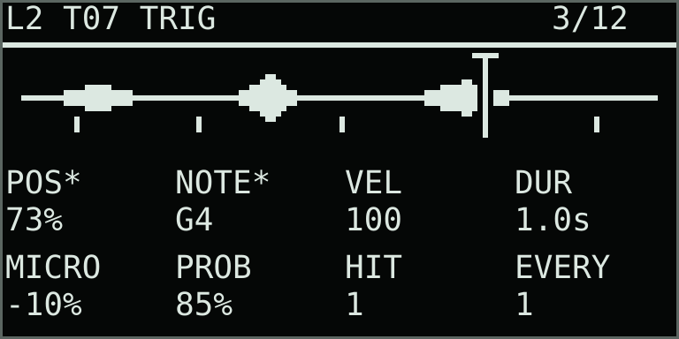
| Knob | Display | Range | What it controls |
|---|---|---|---|
| 1 | POS | 0–100% | Sample start position; inherits the lane engine’s POS. |
| 2 | NOTE | −48–+48 semitones | Pitch offset from the lane root. Unlocked trigs use the root. |
| 3 | VEL | 1–127 | Trigger velocity; inherits SEQ LANE VEL. |
| 4 | DUR | 0.01–32 steps or 10 ms–30 s | Note duration in the selected UNIT; inherits SEQ LANE DUR until locked. |
| 5 | MICRO | −50–+50% | Early or late offset of the trig and all its Burst events. |
| 6 | PROB | 0–100% | Probability for the whole trig, including its Burst. |
| 7 | HIT | 1–8 | Which pass of the selected lane’s sequence fires this trig. |
| 8 | EVERY | 1–8 | Number of lane passes in the condition cycle. The default 1:1 fires every pass. |
Set HIT 1 and EVERY 2 for passes 1, 3, 5…; HIT 2 and EVERY 2 plays passes 2, 4, 6…. The condition uses this lane’s active LEN and its own clock, independent of the other lanes and the clip’s repetition length. A repeated clip preserves the lane’s cycle phase; a fresh Play or a different clip resets it. The condition is checked before PROB, and all Burst events share that decision. Reducing EVERY below HIT clamps HIT to the new range.
While stopped, holding a trig auditions it. Changing NOTE, POS or DUR auditions the new setting. During playback, edits affect its next scheduled occurrence, leaving already sounding trigs unchanged.
Burst
Move to BURST while keeping the step held. Count, event selection, timing and the selected event’s POS, NOTE, VEL and DUR are together on this page. EVENT shows TRIG for shared step values or 1–8 for an individual retrigger. Choose a numbered event before changing WHEN; edits to POS, NOTE, VEL or DUR lock only that event. Delete/X + encoder removes a lock. Delete/X + step pad clears the complete trig.
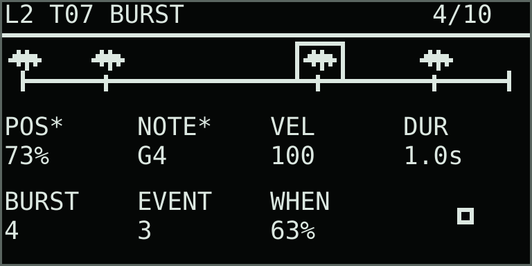
| Knob | Display | Range | What it controls |
|---|---|---|---|
| 1–4 | POS / NOTE / VEL / DUR | As on TRIG | Values for the selected event, inherited from the trig until locked. |
| 5 | BURST | 1–8 events | Number of retriggers; changing the count evenly spaces their initial positions. |
| 6 | EVENT | TRIG / 1–8 | Selects the shared trig or an individual event. |
| 7 | WHEN | 0–99.9% of step | Moves the selected event within the step. Select event 1–8 first. |
Events share the trig’s probability and microtime. Their notes can overlap within the lane’s two-voice budget. SEQ SETUP provides ROOT, SCALE, ENTRY, UNIT and TYPE. CHROM allows semitone entry; SCALE restricts NOTE entry to scale members. Pads remain sequence steps.
Duration and envelope
SEQ SETUP → UNIT chooses how DUR is measured for the selected lane. TIME is the default for new sequences of every type; existing clips keep their saved choice. STEP displays DUR as a count from 0.01 to 32 lane steps, such as 0.5 or 2: RATE, BPM and clip speed change the sounding duration together. At 120 BPM, RATE 1/16 and normal clip speed, DUR 2 lasts 250 ms; at 60 BPM, the same two steps last 500 ms. TIME displays DUR in milliseconds or seconds, from 10 ms to 30 s: changing RATE, BPM or clip speed changes when trigs arrive but leaves the note duration fixed. The lane DUR is the default; a trig or Burst event can lock its own DUR in the active unit. A star marks an override. Switching UNIT retains the previous values in each unit, so they can be selected again.
DUR is the full note lifetime, including release. In Sequence mode, SEQ AMP replaces the ordinary AMP ENVELOPE page. Its graph and ATK, DEC and REL values show the played times for the selected trig’s DUR. Above the graph, STEP shows both the count and its calculated time, such as DUR 2=250ms; TIME shows the fixed time. The ATK, DEC and REL readouts remain in milliseconds or seconds. FIT appears when the stored envelope times would exceed DUR: attack, decay and release are shortened proportionally, and changing one stage can redistribute the others. Otherwise Sustain fills the remaining time. When SUS is below the peak, a brief decay safety ramp prevents an abrupt level step. Knobs 1–4 edit ATK, DEC, SUS and REL; the displayed times update to match playback. Changing a trig’s DUR recalculates the display. MIDI and recorded gestures address the stored envelope settings; SEQ AMP shows their fitted playback times. A short one-shot sample can finish before DUR; a looping engine can fill it. Each lane has two voices for overlapping notes, with smoothed voice stealing if more overlap.
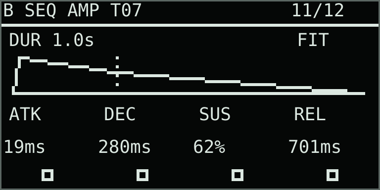
Mixer in Sequence
Open MIXER under Mix/FX to set four lane levels and stereo balances. The same mixer is available in the other instrument modes, with one, two or four outputs to match the mode. The Move Up/Down arrows step directly through STRIP 1, 2, 3 and 4, then PRIORITY DUCK, within the same Mix/FX group. Each strip page always edits its numbered lane: browsing or changing a strip does not change the selected sequence or the destination of an audio take. The strip is after its engine and insert effects, before the four lanes sum. Level 1.00, centered balance, flat EQ, Solo off and priority Key off are neutral defaults.
| Page | Knobs | What it controls |
|---|---|---|
| MIXER | 1–4 LVL1–LVL4; 5–8 PAN1–PAN4 | Lane levels and stereo balance. PAN left or right reduces the opposite channel; it does not sum stereo to mono. |
| STRIP 1–4 | 1 LOW; 2 MID; 3 HIGH; 4 FREQ; 5 SOLO; 6 MUTE | That numbered lane’s low, mid and high EQ gains (±12 dB), mid frequency (120–8000 Hz), solo and mute. LOW and HIGH use fixed bands near 170 Hz and 4.2 kHz. EQ values are in dB; FREQ is in Hz. |
| PRIORITY DUCK | 1 KEY; 2 DEPTH; 3 THR; 4 ATK; 5 HOLD; 6 REL; 7 HPF; 8 KNEE | Choose a protected lane and set how its signal ducks the other three. The detector listens after that lane’s strip and level. Delay and reverb sends follow the ducked signal. |
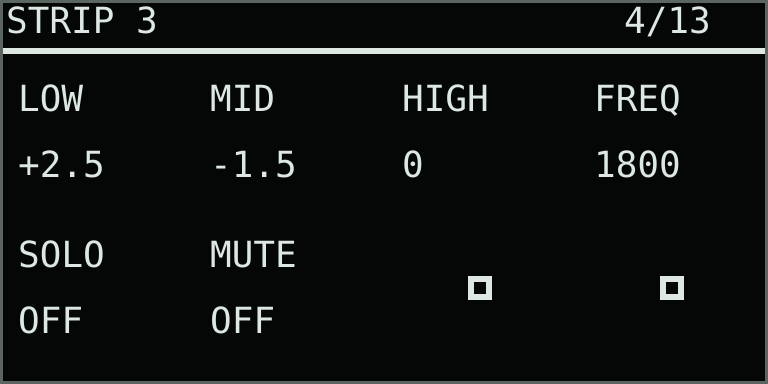
Delay and Reverb are shared processors with a separate send level from each lane. Tape processes the combined signal. FX ORDER is a shared page that places Delay, Reverb and Tape relative to one another; its position does not depend on the selected lane. Delay and Reverb keep independent send inputs, so moving Delay before Reverb does not feed the delay output into the reverb.
Start priority ducking with KEY set to the lane that should stand out, DEPTH around 6 dB and THR around −24 dB. Raise DEPTH or lower THR if the other lanes need more room. ATK and REL smooth the level change; HOLD keeps the reduction briefly after the key fades. HPF removes bass from the detector and KNEE softens the onset. Solo is an audition control; turn it off before saving a performance where all lanes should sound.
Choosing an engine
Sequence fixes each voice to its selected audio lane. Stack Start, Scan Rate, Stack Path, discrete lane Variation, and Cutups lane-advance/order controls do not change that source; their cells show hollow squares or their pages are omitted. See the control availability table.
Each lane keeps its own chosen engine and its own parameter pages. Trig POS supplies a start or source-locus input to that engine; NOTE, VEL and DUR remain per trig. Sample gives the most literal start-and-play behavior. Its Direct Play STR and RATI can stretch a phrase without changing note pitch, but do not automatically fit it to DUR. Slices maps POS to its slice region. Cutups, Glitch, Texture and Pulsar can add internal rhythm after each trig. Motion, Lanes, Grains and Weave evolve within longer notes, while Wavesets, Prism, Morph, Formant and Stochastic reshape the source more substantially. Try TIME DUR or a longer STEP DUR for sustained engines. Morph can still use its paired source lane as designed by that engine.
Sequence POS is not snapped to a zero crossing. A trig starts at the chosen position so timing and transients remain predictable; Thru’s short retrigger fade, voice-steal transition and per-note ADSR smooth the edges. A very short DUR, abrupt processing setting or loud source discontinuity can still be audible. For a clean transient, move POS slightly before the attack and give the envelope a few milliseconds of attack and release.
Recording
Record off means edit the sequence. Changing a lane, recipe, engine or effect control replaces that control’s recorded parameter data in this clip. The new setting survives Stop/Play and recall. Other controls’ recorded motion remains intact. Edits to linked bounds follow their conversion together; any remaining motion of the opposite bound stays within the new limit. With Record on, changes are captured as timed gestures instead. Pad on/off edits and trig locks are always authored sequence content. Play runs the authored trigs plus the recorded data that remains.
Track buttons retain their audio-lane role. Track 2 selects sample lane 2, sequence 2 and the destination for the next audio take. During a take, that destination remains fixed while other sequences are browsed. The header distinguishes them, for example EDIT 3 REC 1. Replacing audio retains the lane’s sequence.
Shift + Record starts or stops audio recording. Record alone captures performance gestures: lane activation, mute, length, rate, rotation, DIR, PATH, default values and normal parameter changes. Euclidean and Onset recipe controls also record: HITS, SHIFT, source mapping and range, ORDER, REPT, LOCKS, AMT, VAR, accents, pitch, duration, humanization and probability. Their changes replay at their recorded times, and the displayed hits and recipe values follow playback. TYPE, PRINT and REGEN are setup actions: finish performance recording before using them. Trig edits change authored clip content directly.
While a clip is playing, pressing Mute without performance recording changes that clip’s starting mute state, so it remains set after Stop and Play. A mute press made during performance recording is a timed gesture: playback starts from the saved state and applies the gesture when its recorded position arrives. Editing that mute later with Record off replaces its recorded mute movement. To remove recorded notes and parameter data completely, hold Delete/X and press Capture, or turn CLR on PERF LOOP (knob 8). Finish recording first. This also removes recorded starting values, so a new HITS setting is retained when Play starts. Trigs, manual on/off overrides, locks, samples, engine settings and clip length remain intact; running sequences keep their phase. The curved-arrow Undo restores the cleared recording. An empty REPLACE take removes old movement but records new starting values and changes the clip duration.
Clips and chains
The bottom buttons remain clip launchers. Each clip stores four sequences, lane programs and sample references. New empty clips inherit the sound setup and samples with empty trigs. Clip Copy/Paste includes the authored sequences. Hold Delete/X and press the clip’s bottom-row button to clear all four lanes’ trigs, including locks, Burst and cycle conditions, its recorded performance, and its four sample assignments. Clearing the active clip stops playback and retains Sequence mode and its lane/engine settings. The curved-arrow Undo restores the last cleared clip. This removes sample assignments; sample files remain in the library. Delete/X + a main pad clears only that trig. Shift + Delete clears only the selected audio lane and retains its sequence.
Repeating a clip, including another chain entry that references it, preserves lane phases. A fresh Play start or a different clip resets its sequences. CLIP sets the composition span without forcing all four lanes to complete a cycle. Existing clip rate, chain repeats and transitions remain available.
Shortcuts and MIDI
| Control | Action |
|---|---|
| Copy + main pad | Copy its complete trig, locks, cycle condition and Burst. |
| Shift + main pad | Paste the copied trig into this step, replacing its previous content. Copy a trig first. |
| Delete/X + Capture | Clear recorded notes and parameter data, retaining authored sequences and samples. |
| Delete/X + bottom clip button | Clear the destination clip’s four sequences, locks, performance data and sample assignments. Undo restores the last clear. |
| Delete/X + main pad | Clear that trig and its locks. |
| Shift + Delete/X | Clear the selected audio lane, retaining its sequence. |
| Delete/X + trig encoder | Restore the inherited value. |
| Mute | Mute the selected lane; supported during performance recording. |
The MIDI guide and NRPN CSV list sequence controls. Part channels 5–8 address lanes 1–4. Select STEP and optionally EVENT before adjusting trig values. Custom CC can assign these destinations without NRPN. Standard note MIDI plays the corresponding lane through its shared two-voice budget.